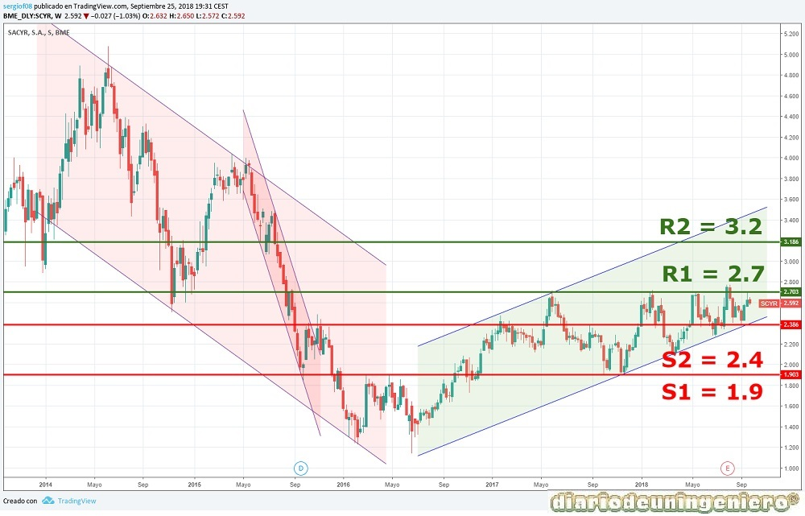

Actualmente Sacyr goza de muy buena salud tanto de proyectos como financiera. Si en 2016 sufrió el peor de los castigos de la bolsa española reduciendo su capitalización a la mitad en tan sólo un año (de 2.5€ a 1.3€) debido a la crisis del petróleo, en 2017 se dio por concluida la recuperación recuperando los precios anteriores.
Cabe destacar que cuando llego la crisis del petróleo que golpearía seriamente a Repsol, Sacyr llevaba un año que lo estaba haciendo realmente bien con una gestión impecable. Había conseguido nuevos contratos y el canal de Panamá estaba a punto de ser concluido. Pero debido a su alta participación en la petrolera con un 10% de sus acciones caería lo indecible. Y es que una empresa tan grande jamás tiene que poner todo en el mismo plato. La no diversificación de su capital pudo llegar a costar a Sacyr una quiebra si hubiera ido a más. Por suerte el juego entre Arabia Saudí y USA terminó y ahora se han tornado todo con unos precios en máximos en 5 años rozando los 80$ el barril.
En 2017 llegaría a los dos euros y comenzaría su ascenso sin parada. Empezaría a despertar ilusión pero se quedaría estancada durante un tiempo largo en un canal lateral entre los 1.8€ y los 2.5€ sin perder nunca su directriz alcista.
En contratos ha ganado varios y los más importantes son la autopista de Roma con un importe total del proyecto de 12.600 millones de euros. La inversión en el proyecto serán unos 2.600 millones de euros, lo que la hace ser un proyecto con muchas plusvalías que podrá ir eliminando la deuda y subiendo la cartera de contratos. Si bien la deuda ya no es para nada preocupante y va reduciéndose año a año. El proyecto estrella de este año es la gestión de una planta de residuos en USA que dará unos ingresos cercanos a los 3.000 millones durante los años que este operativa, es decir, 25 años, siendo la inversión de unos 500 millones de euros.
A continuación presento los datos de fundamentales que me parecen más importantes:
| ### | 2014 | 2015 | 2016 | 2017 | 2018 |
|---|---|---|---|---|---|
| Deuda/ Caja empresa | Deuda Total (M) | 7.005 | 5.113 | 5.260 | 7.360 | ## |
| Beneficio/valor acción | |||||
| Capitalización(M) | 1.437 | 939 | 1.148 | 1.257 | 1.449 |
| EBDITA (M) | 382 | 342 | 351 | 387 | 426* |
| PER | - | 11,22 | 9,06 | 6,91 | |
| Beneficio Neto (M) | 193,773 | 147,921 | 208,081 | 135,834 | 171,8** |
| Dividendo | 27.6777 | ||||
| Rentabilidad por acción | 1,91% | ||||
| Deuda/EBDITA | 15,2 | 16,3 | 13,8 | 12,5 | 11** |
Si nos fijamos en la tabla veremos como posee una gran deuda y si hacemos recuento con los datos antiguos utilizando el beneficio neto de la empresa podemos sacar la conclusión de que la empresa no podría deshacerse de la deuda acumulada en unos 15 años. Esto es bastante pero siendo conocedores de las inversiones en proyectos que se han realizado en 2016 esa deuda se podría solventar en bastante menos. En 2015 la deuda se había reducido en 2000 millones respecto a 2014, gracias en parte a la venta de activos como Testa por 1.800 millones. Con los nuevos contratos antes mencionados la deuda se podría eliminar en unos pocos años y tener un crecimiento bastante sostenido siendo por fundamentales una empresa muy atractiva al precio que cotiza la acción y sabiendo la capitalización actual.
En la tabla se muestra como en 2015 fue el año con una capitalización menor por debajo de los 1000 millones cosa que le hizo descender del IBEX35 al mercado Continuo donde continua hoy en día. Aun así los años anteriores había acumulado una deuda muy abultada con posible riesgo de quiebra si no se hacían las cosas bien y el mercado en vez de penalizar subió la cotización con gran especulación.
Primeramente mostrare un gráfico a largo plazo donde se aprecia la bajada que protagonizo a partir de 2014, el posterior rebote al ver como Sacyr presentaba por primera vez unos resultados en la que la deuda bajaba y un plan estratégico muy ambicioso y la posterior caída en 2015 hasta mínimos por el hundimiento del petróleo que llego a los 30$ y afecto mucho a las petroleras como REPSOL y en general a todos los valores.
Tras hacer doble suelo comenzó su tendencia alcista donde el valor iría escalando hasta los máximos del IBEX35 cuando Macron gano las elecciones y todos los índices europeos se dispararon. Ahí alcanzaría la resistencia actual y hoy soporte y resistencia donde se anda moviendo, en 2.7€. A partir de aquí el soporte de 2.5 lo esta respetando y la tendencia alcista sigue impecable.

Si nos vamos a un gráfico de medio plazo podremos observar como ha tocado la linea de soporte en Julio y a inicios de Septiembre de nuevo. Si en el MACD, área resaltada se vuelven a cruzar las lineas como parece ser se volvería de nuevo a soporte donde sería muy buena ocasión para abrir posiciones largas o comprar acciones con objetivo los 2.7€ y ganar un 11%, si se desea poner STOP se pondría sobre los 2.25-2.35.

Usando este sitio web aceptas nuestros Terminos y condiciones. Por favor Aceptar esto antes de usar el sitio web.
© 2016 - All Rights Reserved - Diseñada por Sergio López Martínez
El sitio se mantiene gracias a la publicidad, por favor Desactiva Adblock para seguir navegando
He desactivado Adblock![[Valid RSS]](https://www.feedvalidator.org/images/valid-rss-rogers.png "Validate my RSS feed")